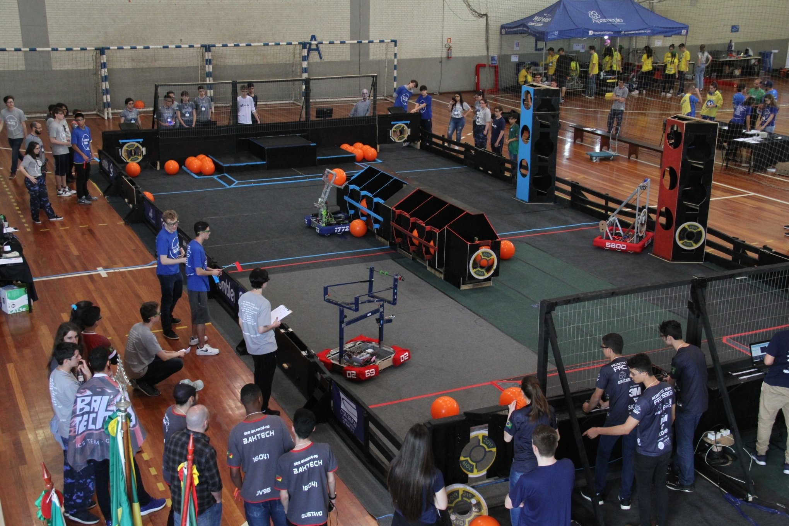
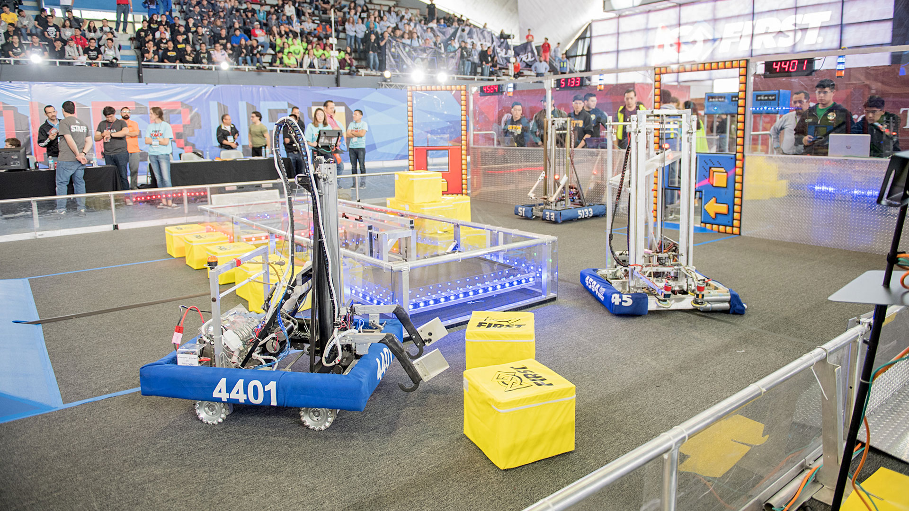

Próximos Eventos
- Competencia Regional de Robótica - 15 de Mayo
- Festival de Robótica - 20 de Junio
- Conferencia de Robótica - 1 de Julio 
Competencias Destacadas
- RoboCup - Competencia Internacional de Fútbol Robótico
- BattleBots - Competencia de Robots de Combate
- First Robotics Competition - Competencia de Robótica para Estudiantes de Secundaria 
Recursos para Participantes
Si estás interesado en participar en una competencia de robótica, estos recursos pueden ser útiles: